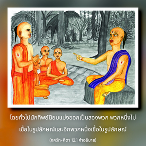
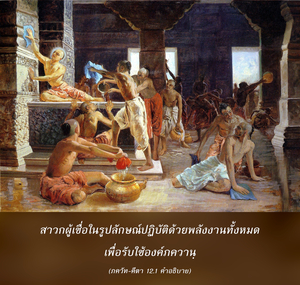

อรฺชุน ทรงถามว่า ระหว่างพวกที่ปฏิบัติการอุทิศตนเสียสละรับใช้แด่พระองค์อย่างถูกต้องเสมอ และพวกที่บูชา พฺรหฺมนฺ อันไร้รูปลักษณ์ที่ไม่ปรากฏ พิจารณาว่าพวกไหนสมบูรณ์กว่ากัน



บัดนี้ องค์กฺฤษฺณทรงอธิบายเกี่ยวกับเรื่องมีรูปลักษณ์ ไม่มีรูปลักษณ์ และรูปลักษณ์จักรวาล พร้อมทั้งอธิบายถึงสาวก และโยคีทั้งหลาย โดยทั่วไปนักทิพย์นิยมแบ่งออกเป็นสองพวก พวกหนึ่งไม่เชื่อในรูปลักษณ์ และอีกพวกหนึ่งเชื่อในรูปลักษณ์ สาวกผู้เชื่อในรูปลักษณ์ปฏิบัติด้วยพลังงานทั้งหมดเพื่อรับใช้องค์ภควานฺ ผู้ไม่เชื่อในรูปลักษณ์มีการปฏิบัติเช่นกันโดยการทำสมาธิอยู่ที่ พฺรหฺมนฺ อันไร้รูปลักษณ์ที่ไม่ปรากฏ แต่จะไม่รับใช้องค์กฺฤษฺณโดยตรง
เราพบในบทนี้ว่า ในวิธีการต่างๆ เพื่อการรู้แจ้งสัจธรรม ภกฺติ-โยค หรือการอุทิศตนเสียสละรับใช้นั้นเป็นวิธีที่สูงสุด หากผู้ใดปรารถนามาอยู่ใกล้ชิดกับบุคลิกภาพสูงสุดแห่งพระเจ้า ผู้นั้นจะต้องปฏิบัติการอุทิศตนเสียสละรับใช้
พวกที่บูชาองค์ภควานฺโดยตรง ด้วยการอุทิศตนเสียสละรับใช้ เรียกว่า พวกเชื่อในรูปลักษณ์ พวกปฏิบัติสมาธิอยู่ที่ พฺรหฺมนฺ อันไร้รูปลักษณ์ เรียกว่า พวกไม่เชื่อในรูปลักษณ์ ณ ที่นี้ อรฺชุน ทรงถามว่าสถานภาพไหนดีกว่ากัน มีวิธีต่างๆ เพื่อรู้แจ้งสัจธรรม แต่องค์กฺฤษฺณทรงแสดงในบทนี้ว่า ภกฺติ-โยค หรือการอุทิศตนเสียสละรับใช้ต่อพระองค์เป็นสิ่งที่สูงสุด เป็นสิ่งที่โดยตรงที่สุด และเป็นวิธีที่ง่ายที่สุดในการได้อยู่ใกล้ชิดกับองค์ภควานฺ
ในบทที่สองของ ภควัท-คีตา องค์ภควานฺทรงอธิบายว่า สิ่งมีชีวิตไม่ใช่ร่างวัตถุ แต่เป็นละอองอณูทิพย์ และสัจธรรมเป็นส่วนทิพย์ที่สมบูรณ์ ในบทที่เจ็ดองค์ภควานฺทรงแนะนำว่า สิ่งมีชีวิตในฐานะที่เป็นละอองอณูของส่วนที่สมบูรณ์สูงสุด จึงควรย้ายความสนใจทั้งหมดไปสู่ส่วนที่สมบูรณ์ จากนั้นในบทที่แปดได้กล่าวไว้ว่า หากผู้ใดระลึกถึงองค์กฺฤษฺณในขณะที่ออกจากร่างวัตถุ จะย้ายไปสู่ท้องฟ้าทิพย์ที่พระตำหนักของพระองค์โดยทันที และในตอนท้ายของบทที่หกองค์ภควานฺตรัสอย่างชัดเจนว่า ในบรรดาโยคีทั้งหลาย ผู้ที่ระลึกถึงองค์กฺฤษฺณภายในตนเองเสมอ พิจารณาว่าเป็นผู้ที่สมบูรณ์สูงสุด ดังนั้น ในทุกๆ บทจะเห็นข้อสรุปว่า เราควรยึดมั่นอยู่ที่รูปลักษณ์ส่วนพระองค์ขององค์กฺฤษฺณ เพราะนั่นคือความรู้แจ้งทิพย์ที่สูงสุด
อย่างไรก็ดี มีพวกที่ไม่ยึดมั่นอยู่กับรูปลักษณ์ส่วนพระองค์ขององค์กฺฤษฺณ ไม่ยึดมั่นอย่างแน่วแน่แม้ในการเตรียมคำอธิบาย ภควัท-คีตา แต่ต้องการทำให้ผู้คนไขว้เขวไปจากองค์กฺฤษฺณ เพื่อเปลี่ยนย้ายการอุทิศตนเสียสละทั้งหมดไปที่ พฺรหฺม-โชฺยติรฺ ซึ่งไร้รูปลักษณ์ และชอบทำสมาธิอยู่กับสิ่งที่ไม่มีรูปลักษณ์แห่งสัจธรรมมากกว่า ซึ่งอยู่เกินเอื้อมประสาทสัมผัส และไม่เป็นที่ปรากฏ
อันที่จริงมีนักทิพย์นิยมอยู่สองกลุ่ม บัดนี้ อรฺชุน ทรงพยายามสรุปคำถามว่า วิธีใดง่ายกว่ากัน และกลุ่มไหนสมบูรณ์ที่สุด อีกนัยหนึ่ง ท่านทำให้สถานภาพของท่านเองกระจ่างขึ้น เนื่องจากท่านยึดมั่นอยู่กับรูปลักษณ์ส่วนพระองค์ขององค์กฺฤษฺณ อรฺชุน ทรงไม่ยึดติดอยู่กับ พฺรหฺมนฺ อันไร้รูปลักษณ์ และปรารถนาจะทราบว่า สถานภาพของท่านนั้นปลอดภัยหรือไม่ ปรากฏการณ์อันไร้รูปลักษณ์ ไม่ว่าในโลกวัตถุนี้ หรือในโลกทิพย์ขององค์ภควานฺจะเป็นปัญหาในการทำสมาธิ อันที่จริง เราไม่สามารถสำเหนียกเกี่ยวกับลักษณะอันไร้รูปลักษณ์แห่งสัจธรรมได้อย่างถ่องแท้ ดังนั้น อรฺชุน ทรงปรารถนาจะกล่าวว่า “จะมีประโยชน์อันใดกับการสูญเสียเวลาไปเช่นนี้” อรฺชุน ทรงอธิบายในบทที่สิบเอ็ดว่า การยึดมั่นอยู่กับรูปลักษณ์ส่วนพระองค์ขององค์กฺฤษฺณดีที่สุด เพราะทำให้ท่านเข้าใจรูปลักษณ์อื่นๆ ทั้งหมดได้ในขณะเดียวกัน และความรักที่ท่านมีต่อองค์กฺฤษฺณก็จะไม่ถูกรบกวน อรฺชุน ทรงได้ถามคำถามสำคัญนี้ต่อองค์กฺฤษฺณ จะทำให้ข้อแตกต่างระหว่างแนวคิดที่ไร้รูปลักษณ์ และแนวคิดที่มีรูปลักษณ์แห่งสัจธรรมกระจ่างขึ้น